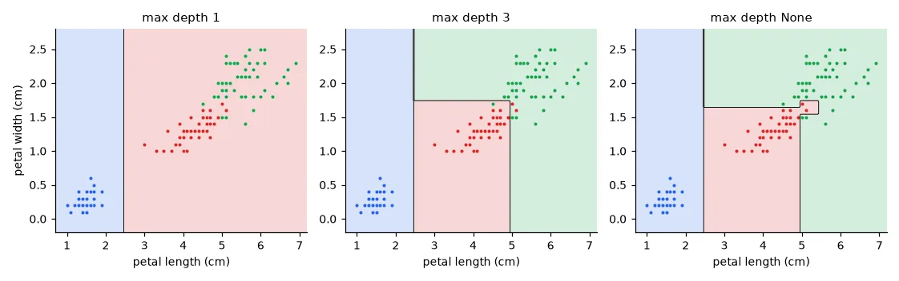
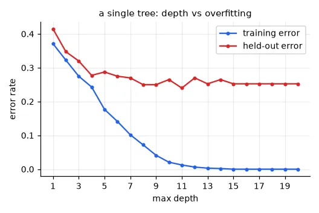
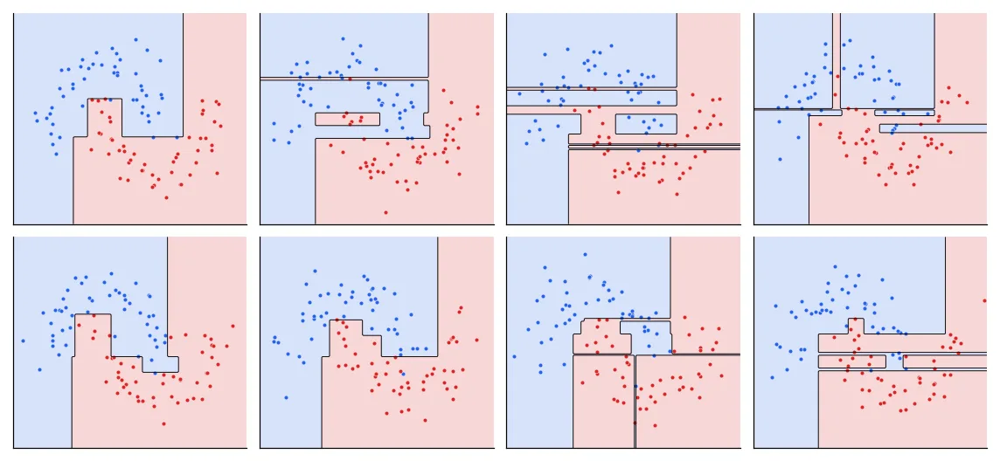

Twenty questions#
A decision tree classifies by asking a sequence of yes/no questions about the features — is the petal width ≤ 0.8 cm? — each answer leading to the next question, until a leaf gives the class. It needs no scaling (a threshold doesn't care about units), handles mixed feature types, and the result can be printed and checked by a domain expert. Those are big advantages in practice.
Learning a tree means choosing the questions. Finding the optimal tree is NP-hard, so every algorithm is greedy: at each node, pick the single question that best separates the classes right now, split the data, and recurse.
Measuring purity#
A node is good if it is pure — all its samples have the same class. The Gini impurity of a node with class proportions \(p_k\) is
the probability that two samples drawn at random from the node have different labels: 0 for a pure node, \(1 - 1/K\) for a uniform mix of \(K\) classes. (Entropy, \(-\sum_k p_k\log p_k\), is the other common choice; they rarely give different trees.) A split is scored by the weighted impurity of its two children, and the best split is the one that lowers it most. Candidate thresholds are the midpoints between consecutive values of each feature.
def gini(y):
"""Probability that two samples drawn at random from y have different labels."""
p = np.bincount(y) / len(y)
return 1 - np.sum(p ** 2)
def best_split(X, y):
"""Try every feature and every threshold between consecutive values; keep the purest split."""
best = (None, None, gini(y)) # (feature, threshold, weighted impurity)
n = len(y)
for j in range(X.shape[1]):
values = np.unique(X[:, j])
for t in (values[:-1] + values[1:]) / 2: # midpoints
left = X[:, j] <= t
imp = (left.sum() * gini(y[left]) + (~left).sum() * gini(y[~left])) / n
if imp < best[2] - 1e-12:
best = (j, t, imp)
return best
CART from scratch#
The tree is a recursive structure: a leaf, or a question with two subtrees. We stop when the node is pure, too small, or the maximum depth is reached.
def build_tree(X, y, depth=0, max_depth=None, min_samples=2):
"""Recursive CART. A node is either a leaf (a class) or (feature, threshold, left, right)."""
majority = np.bincount(y).argmax()
if len(np.unique(y)) == 1 or len(y) < min_samples or depth == max_depth:
return majority
j, t, _ = best_split(X, y)
if j is None: # no split reduces the impurity
return majority
left = X[:, j] <= t
return (j, t, build_tree(X[left], y[left], depth + 1, max_depth, min_samples),
build_tree(X[~left], y[~left], depth + 1, max_depth, min_samples))
def predict_one(node, x):
while isinstance(node, tuple):
j, t, left, right = node
node = left if x[j] <= t else right
return node
def predict(tree, X):
return np.array([predict_one(tree, x) for x in X])
On the iris flowers (two features, petal length and width, three species):
iris = load_iris()
X, y = iris.data[:, 2:], iris.target # petal length and width, 3 species
tree = build_tree(X, y, max_depth=3)
j, t, imp = best_split(X, y)
print("root split: %s <= %.2f, Gini impurity %.3f -> %.3f" % (iris.feature_names[2 + j], t, gini(y), imp))
ref = DecisionTreeClassifier(max_depth=3, random_state=0).fit(X, y)
print(export_text(ref, feature_names=["petal length", "petal width"]))
print("depth-3 tree: training accuracy %.3f (ours) vs %.3f (scikit-learn), same predictions on %.0f%%"
% (np.mean(predict(tree, X) == y), ref.score(X, y), 100 * np.mean(predict(tree, X) == ref.predict(X))))
root split: petal length (cm) <= 2.45, Gini impurity 0.667 -> 0.333
|--- petal width <= 0.80
| |--- class: 0
|--- petal width > 0.80
| |--- petal width <= 1.75
| | |--- petal length <= 4.95
| | | |--- class: 1
| | |--- petal length > 4.95
| | | |--- class: 2
| |--- petal width > 1.75
...
depth-3 tree: training accuracy 0.973 (ours) vs 0.973 (scikit-learn), same predictions on 100%
The first question isolates setosa perfectly, from 0.667 to 0.333 impurity. Our tree asks it with petal length, scikit-learn with petal width: both separate setosa perfectly, it is a tie, and scikit-learn breaks ties by visiting the features in random order. The predictions are identical. Notice also the last split of scikit-learn's tree: both children predict class 2. It is not useless — it makes one child purer, which is what Gini rewards — but it does not change any prediction.

Depth and overfitting#
A tree grown until every leaf is pure has zero training error — it can always isolate each sample in its own leaf. On a harder synthetic problem (2,000 samples, 20 informative features, overlapping classes):
Xc, yc = make_classification(n_samples=2000, n_features=20, n_informative=20, n_redundant=0,
class_sep=0.9, random_state=11)
Xtr, Xte, ytr, yte = train_test_split(Xc, yc, test_size=0.2, stratify=yc, random_state=0)
depths = range(1, 21)
tr_err, te_err = [], []
for d in depths:
clf = DecisionTreeClassifier(max_depth=d, random_state=0).fit(Xtr, ytr)
tr_err.append(1 - clf.score(Xtr, ytr))
te_err.append(1 - clf.score(Xte, yte))
best = int(np.argmin(te_err))
print("depth with lowest held-out error: %d (%.3f); depth 20: train %.3f, held-out %.3f"
% (depths[best], te_err[best], tr_err[-1], te_err[-1]))
depth with lowest held-out error: 11 (0.240); depth 20: train 0.000, held-out 0.252

A gap is not the same as getting worse
In my lab report I wrote that trees deeper than 9 overfit and the best ones were depths 1 to 5. The first half is right — the train/held-out gap explodes — but the shallow trees are clearly worse here (28–41% error): they underfit. On this problem the held-out error does not rise again after its minimum; deep trees memorise the training set without (much) extra damage on new data. The best tree is still only 76% accurate, though, and the next figure shows why one tree cannot do better.
The real problem: variance#
Train the same unlimited tree on eight different samples of 100 points from the same distribution:
fig, axes = U.figure(4, 2, size=(2.6, 2.4))
for i, ax in enumerate(axes.flat):
Xm, ym = make_moons(n_samples=100, noise=0.2, random_state=i) # 8 samples of the same distribution
t = DecisionTreeClassifier(random_state=0).fit(Xm, ym) # grown until the leaves are pure
U.plot_decision(ax, t.predict, Xm, ym, resolution=150, lims=(-1.6, 2.6, -1.2, 1.7))
ax.set_xticks([])
ax.set_yticks([])
U.finish("instability", fig)

A small change in the data changes the first split, which changes everything below it. In statistical terms, deep trees have low bias (they can represent almost anything) and very high variance (what they represent depends heavily on the particular sample). Pruning or limiting depth trades variance for bias. The much better idea — average many trees, so their individual quirks cancel out — is the subject of lesson 08.
Exercises#
- Replace Gini by entropy in
best_split. Does the iris tree change? - Add regression trees: a leaf predicts the mean of its samples, and a split minimises the weighted variance of the children. Fit \(y = \sin(x)\) + noise and plot the staircase prediction for depths 2, 4 and 8.
best_splittries every threshold of every feature, \(O(d\,N^2)\) per node. Sort each feature once and update the class counts incrementally while scanning thresholds to make it \(O(d\,N\log N)\).